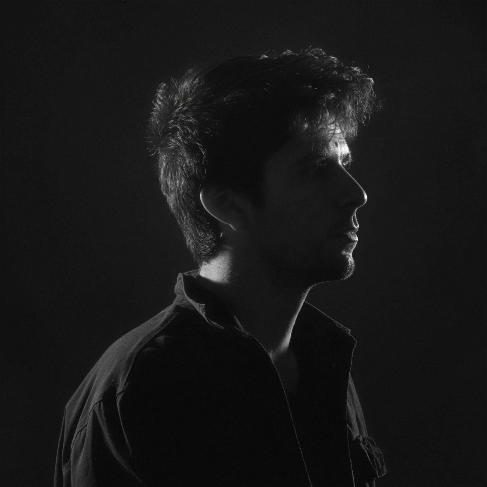
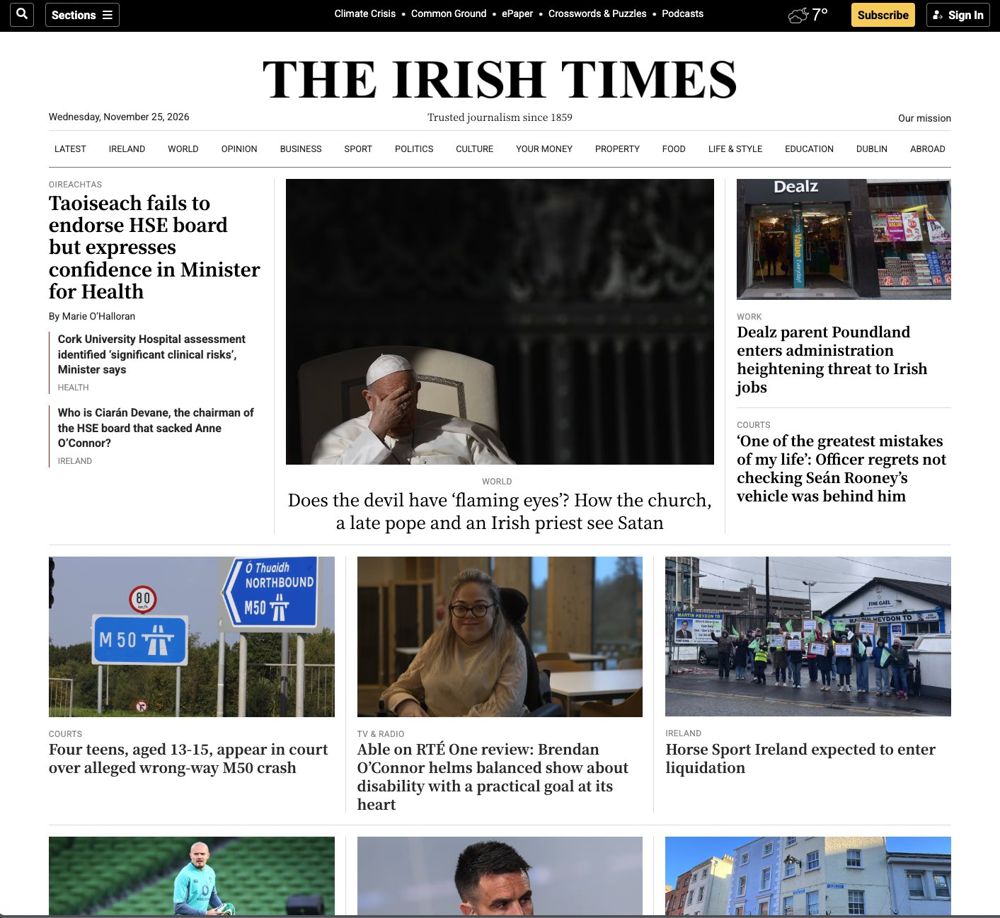
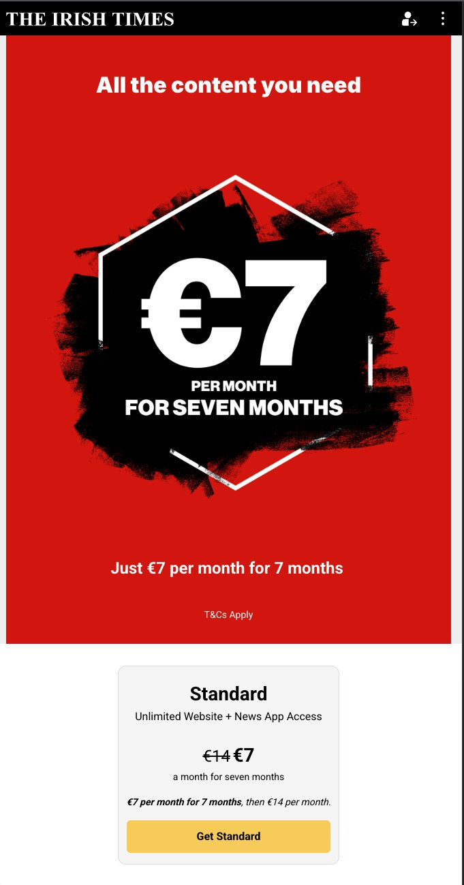
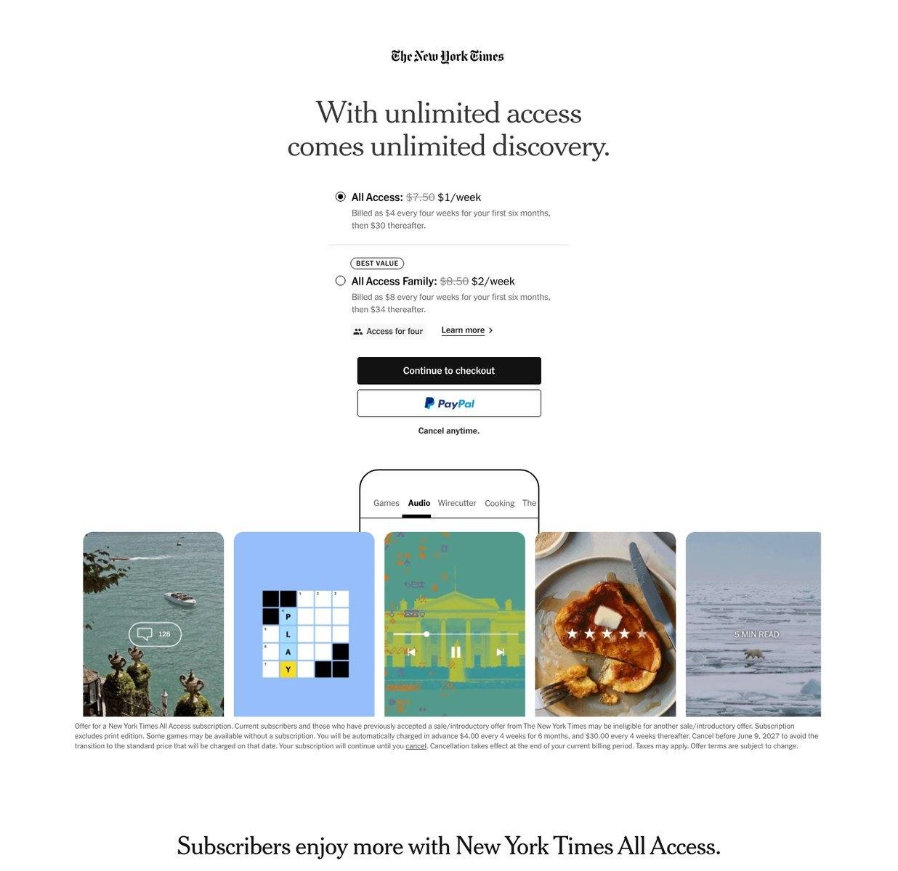
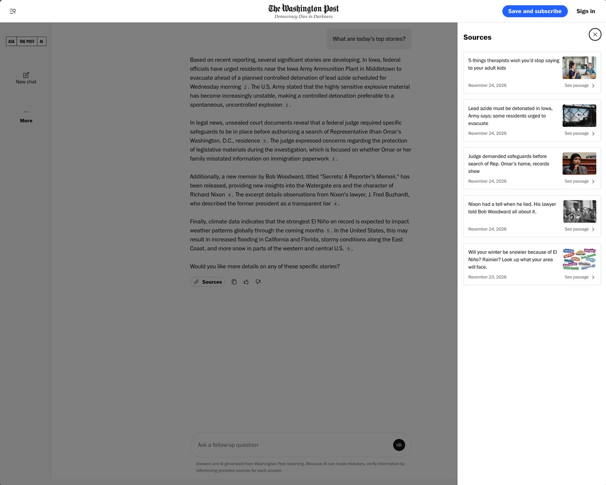

A few notes on The Irish Times
November 2026
Hello from Milan.
I’m Romario, a product designer. Instead of a cover letter, I wanted to introduce myself with a close look at your digital product.
Romario Muça
Unofficial concept, not affiliated with The Irish Times
In short
The whole deck in one page
If you only have 30 seconds, this is it.
Romario Muça
Who I am
Product designer. MSc in Digital and Interaction Design at Politecnico di Milano (110/110) and Alta Scuola Politecnica.
Where I come from
Three years with startups and studios: embedded in a 9-person dev team at Devnut, plus Sensia, HMDRIVE and DeepTree. I’ve also designed a chatbot for an online news publication.
Your product today
Journalism fully paid for by readers. A strong front page, the same for everyone. An offer that leads with price, and newsletters that already work as a soft paywall.
What others do
The New York Times and The Economist build daily habits. The Washington Post and the BBC use AI only on their own journalism, always with sources.
What I’d propose
A chat bubble that answers in context, only from Irish Times reporting. And My Irish Times: follow topics, get your own front page and a Friday email. Both in a clickable prototype.
What struck me first
Your journalism is paid for by your readers. That’s rare.
150k
print and digital subscribers across the group
100%
of the journalism funded by subscriber revenue
NYT
a year of New York Times access included with a Premium subscription
So the question I took into this wasn’t “how do you get subscribers”. It was: what makes people pay, and then come back every day?
Romario Muça
Press Gazette (Feb 2026), Reuters Institute DNR 2026, irishtimes.com/subscribe
Your homepage, as a logged-out reader
It reads like a great newspaper
15 top-level sections, a strong lead story, then about twenty section blocks, Most Read and video.
Reviewed 24–25 November 2026.
1
What works. A clear hierarchy, with analysis sitting right next to the news.
2
What I’d look at. Logged out, a rugby fan and a property reader scroll the same 20+ blocks. I don’t know what logged-in readers or app users see.
Podcasts, puzzles and newsletters are all here, but as links. A ‘today’ view could turn them into a routine.
Romario Muça

irishtimes.com · 25 November 2026
Two pages I spent time on
Subscribing, and signing up
The subscription page and the newsletters page are where a reader decides how close they want to get.
1
One thing I’d love to test. The page opens on a big “€7 a month for seven months”, while what you actually get (NYT access, puzzles, the archive, ePaper) shows up further down. Leading with value could be worth an A/B test.
2
The newsletters already do two jobs. Yellow ‘Subscribe’ and blue ‘Sign up’ side by side: free newsletters bring people in, subscriber ones are a soft paywall.
Picking newsletters is readers telling you what they care about. That’s the seed of a personal Irish Times.
Romario Muça

irishtimes.com/subscribe
irishtimes.com/newsletters
What others do · 1 of 2
Give people a reason to come back
The New York Times now has 12.8M subscribers, and over half its digital base pays for the bundle: news plus Games, Cooking and more. The Economist’s Espresso does the opposite: a short daily brief you can actually finish.
NYT Q4 2025 results, Zacks, App Store.
1
NYT. The bundle grows, so readers move up without a discount.
2
The Economist. Five short reads, audio, time-to-read and a clear end.
You already have Puzzles, Food, Pricewatch, the News Digests and Early Edition. Brought together, they could become a daily habit.
Romario Muça

nytimes.com/subscription
What others do · 2 of 2
AI that earns trust
Ask The Post AI answers only from Washington Post reporting since 2016, shows its sources, and declines when there’s nothing worth citing. The BBC’s ‘At a glance’ summaries are reviewed by a journalist and clearly labelled.
Washington Post, TechRadar, BBC Media Centre.
1
Washington Post. Built on its own journalism, never the open web.
2
BBC. Human review and an honest label.
I’ve designed a newsroom chatbot before, so I know where it gets hard. With an archive back to 1859, I’d start small: one topic, like housing.
Romario Muça

Ask The Post AI · an answer with its sources panel open
One idea, made concrete
Ask The Irish Times
A chat bubble on every page that knows where you are. On the front page it points you to stories; inside an article it answers about that article first, then the archive. Only Irish Times journalism, always with sources.
1
Contextual. It knows what you’re reading and suggests questions it can actually answer.
2
Grounded. Every answer cites Irish Times articles. No source, no answer.
3
Worth subscribing for. Full answers for subscribers, a few a week for registered readers.
This is the one I’d most like to build with you. I’ve designed a version of it for another news publisher, so I know where the hard parts are.
Romario Muça
Screen recording of the working prototype
A second idea, made concrete
My Irish Times
Your newsletters page already asks readers what they care about. This goes one step further: follow a topic once, and it lands in your inbox.
1
Follow in one tap. From the front page or any article.
2
All in one box. Pick or change your topics right on the front page.
3
A Friday email. The week’s best stories on the topics you follow, sent through your existing newsletter and Salesforce setup.
No AI needed: it runs on CMS tags, newsletters and Salesforce.
Romario Muça
Screen recording of the working prototype
How I work
Whatever the brief turns out to be
You’ll tell me what you actually need. This is how I usually go about it, and what I’d bring.
1
Listen first. Priorities, constraints, the team, the data.
2
Design and test. Prototype fast, test with real readers, work side by side with developers and editors.
3
Ship and hand over. Clean handoff, measure what changed, document it.
Romario Muça
What you asked for, and where I’ve done it
UI/UX
Web apps, SaaS and dashboards, embedded in a dev team at Devnut. Data-heavy interfaces at Sensia.
Web and CMS
Hands-on with WordPress and HTML/CSS. I build and publish my own sites, so I design with implementation in mind.
Publishing
A chatbot for an online news publication, answering from its own articles.
AI tools
Part of my daily work. The research and screenshots in this deck were done with them.
Drupal and Salesforce
I’m used to joining existing teams and stacks, and I’d get up to speed on yours in the first weeks.
Thanks for reading
Could I walk you through it in 15 minutes?
I’m available for the three-month contract, working remotely from Milan on Irish time. I’d also love to come and visit you on site in Dublin.
And I’d genuinely like to hear where I got things wrong.
Available: immediately
Day rate: €350
Setup: EU freelancer with an Italian VAT number, invoicing monthly
Romario Muça
Product Designer · romario.muca@gmail.com · +39 347 507 3092
Temple Bar, Dublin